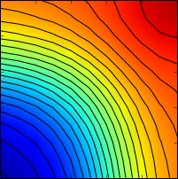
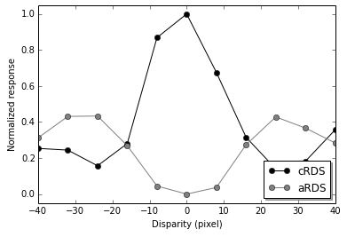
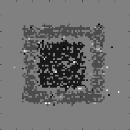
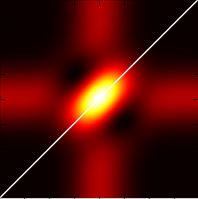

Many neurons in the brain are driven by more than one sensory system (e.g. vision and audition), and they might play an important role in improving our perception of what surrounds us. Here I explore recent work by Ohshiro and colleages on the role of divisive normalization in multisensory integration.

A short notebook on the disparity energy model and responses to correlated and anticorrelated binocular images.

David Marr was a bright computer scientist whose work still has a remarkable impact in modern computational neuroscience. He published several papers on stereoscopic vision, of which the most popular I explore here.

Nearly a quarter of a century has passed since Ohzawa and colleagues proposed a model of how cortical neurons in primary visual cortex might support depth discrimination. Here is a demo of how it works.